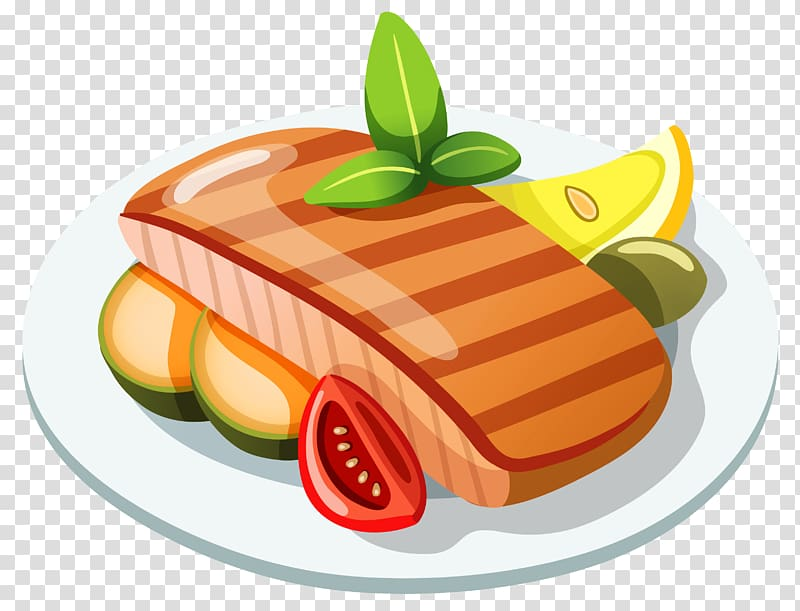

Smachno.go Смачного! |
||
Перелік страв | ||
ЗакускиЗакуски - смачна їжа під перегляд фільму чи серіалу. Комусь без улюблених закусок важко уявити вдалий відпочинок вдома, а хтось обожнює доповнювати свій стіл різними смаколиками. Пропоную вам декілька цікавих рецептів цих смачних "додаткових" страв. |
СніданокСніданок - головний прийом їжі. Він надає сил, покращує стан організму і налаштовує його до праці. За статистикою, людина, яка не пропускає даний прийом їжі має менше проблем зі здоров'ям. Дуже приємно починати свій день зі смачної страви, тому ось рецепти легких сніданків. |
|
Гарячі страви Саме вони є основною нашого раціону. М'ясні вироби, каші і, звістно, супи - неймовірне різномаїття смачних страв із різних кухонь світу. |
ДесертиХто зможе відмовитись від солодкого десерту? Тістечка, морозиво, шоколадні вироби - вже такі звичні для нас солодощі, які зберігають свій титул смачніших страв для дітей і дорослих. |
|
Bon appétit!Усеінов Есфер 8-МТ |
||